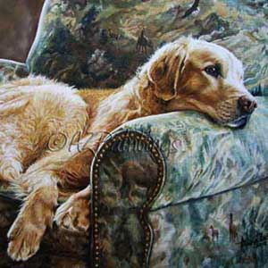
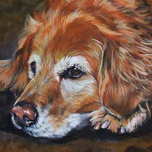

Początki golden retrievera są nieco kontrowersyjne. Początkowo wyhodowana do udziału w polowaniach, rasa ta stała się popularną rasą psów rodzinnych. Rasa pochodzi z Wielkiej Brytanii (Szkocja), została wyhodowana pod koniec XIX wieku. Prawdopodobnie goldeny zostały wyhodowane przez lorda Dudleya Mjoribanksa. W 1858 roku lord miał obejrzeć przedstawienie rosyjskiej grupy cyrkowej, którego główną atrakcją były pokazy kilku owczarków o żółtawej maści. Urzeczony ich umiejętnościami lord odkupił je i przywiózł do swojej posiadłości i to one miały być przodkami goldenów. Chociaż historię tę często się przytacza gdy mowa jest o początkach rasy, większość kynologów uważa ją za mało prawdopodobną. Owczarki charakteryzują się zupełnie innymi cechami niż psy myśliwskie. Związek z tą opowieścią ma jedynie to, że pierwsze goldeny pojawiły się na wystawie pod nazwą rosyjskich retrieverów. Inne źródła podają, że rasę tę wyodrębnił w XIX wieku lord Tweedmouth. Istnieje także teoria, według której skrzyżowano żółtego retriwera gładkowłosego o imieniu Nous z suką tweed water spaniela i otrzymano cztery, żółte szczenięta.
Uspodobienie Golden Retrievery to doskonałe psy myśliwskie i "rodzinne". Statystyczny przedstawiciel tej rasy jest pojętny, chętny do pracy, ma zrównoważoną psychikę i lubi dzieci. Jeśli jednak ktoś szuka psa do stróżowania, dzwonka alarmowego lub obrońcy domu powinien raczej rozejrzeć się za inną rasą. Golden może zalizać na śmierć złodzieja, a włamanie do domu po prostu przespać.Psy te uwielbiają pracować i przebywać z człowiekiem - właściwie prowadzone zrobią wszystko, aby spełnić jego oczekiwania. Niezbędne do ich prawidłowego rozwoju jest towarzystwo i spora ilość bodźców psychicznych, absolutnie nie nadają się do trzymania na łańcuchu z dala od ludzi. Bardzo łatwo się uczą i chętnie powtarzają te same ćwiczenia, są urodzonymi aporterami, co jest wykorzystywane m.in. w rehabilitacji niepełnosprawnych; psy przynoszą zakupy, podnoszą telefony itp. Goldeny uwielbiają wodę, jeszcze bardziej bagna i błota. Są to psy myśliwskie, w czasie polowania ich zadaniem jest przynoszenie ustrzelonej zwierzyny wprost pod nogi właściciela.
Wygląd Golden to pies o harmonijnej i silnej budowie. Ekspresyjna głowa, z wyraźnie zaznaczonym stopem i ciemne, szeroko rozstawione oczy składają się na niepowtarzalny efekt wizerunku radosnego i inteligentnego psa. Uszy średniej wielkości, osadzone na poziomie oczu. Prosty grzbiet, głęboka klatka piersiowa z widocznym przedpiersiem. Proste kończyny o mocnej kości. Ogon osadzony i noszony z linią grzbietu, sięgający stawu skokowego, i z obfitym piórem. Chód dynamiczny. Sierść powinna być gęsta z podszerstkiem, prosta lub falista. Umaszczenie złote lub kremowe. Należy w tym miejscu wspomnieć ,że istnieją istotne różnice między dwoma typami goldenów - amerykańskim i angielskim. Golden retriever występuje w dwóch liniach hodowlanych, które różnią się od siebie pod względem wyglądu. Linia angielska (Europejska): psy z tej linii mają jasne kremowe umaszczenie lub jasno złote.
PielęgnacjaTak aktywny pies potrzebuje sporej dziennej dawki ruchu (co najmniej 2-godzinnej). Wymaga regularnego wyczesywania - przynajmniej raz w tygodniu, a w okresie linienia codziennie. Wymaga także specjalnej uwagi w pielęgnacji uszu ze względu na ich podatność na infekcje.Najczęstsze choroby: dysplazja bioder, dysplazja łokci,zapalenie więzadeł,PRA - postępujący zanik siatkówki, katarakta, dysplazja siatkówki, zapalenie powieki, dystrofia rogówki, zapalenie uszu, parwowiroza.
| --------- | wszystko | wszystko | wszystko |
|---|---|---|---|
| food | food | food | Bacon |
| Poniżej | cała | prawda | o Goldenach ;-) |